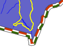

| Author: | Thomas Bonfort |
|---|
| Contact: | thomas.bonfort at gmail |
|---|
| Revision: | $Revision: 8295 $ |
|---|
| Date: | $Date: 2008-12-27 01:08:04 -0400 (Sat, 27 Dec 2008) $ |
|---|
| Last Updated: | 2008/11/24 |
|---|
MapServer 5.0 released with a new rendering backend. This howto details
the changes and new functionality that this adds to map creation. This howto assumes
you already now the basics of mapfile syntax. If not, you should probably be reading
the mapfile syntax.
- All rendering is now done antialiased by default. All ANTIALIAS keywords
are now ignored, as well as TRANSPARENCY ALPHA. Pixmaps and fonts are now
all drawn respecting the image’s internal alpha channel (unless a
backgroundcolor is specified).
- As with GD in ver. 4.10, using a SYMBOL of type ELLIPSE to draw thick
lines isn’t mandatory anymore. To draw a thick line just use:
STYLE
WIDTH 5
COLOR 0 0 255
END
- A line symbolizer has been added, that works with vector or pixmap
symbols, to draw textured lines. This happens by default if a line’s style
is given a symbol of type vector or pixmap. To enable “shield” symbolization,
i.e. a marker placed only on some points of the line, you must add a GAP
parameter to your symbol definition. This GAP value is scaled w.r.t the
style’s SIZE parameter. Specify a positive gap value for symbols always
facing north (optionally rotated by the ANGLE of the current style), or
a negative value for symbols that should follow the line orientation

- This happens by default if a line’s style is given a symbol of type vector
or pixmap. To enable “shield” symbolization, i.e. a marker placed only on
some points of the line, you must add a GAP parameter to your symbol
definition. This GAP value is scaled w.r.t the style’s SIZE parameter -
specify a positive gap value for symbols always facing north (optionally
rotated by the ANGLE of the current style), or a negative value for symbols
that should follow the line orientation
- Pixmap and font symbols can now be rotated without loosing their transparency
- For POLYGON layers with no specific SYMBOL, the WIDTH keyword specifies the
width of the outline, if an OUTLINECOLOR was specified. This is a shorthand
that avoids having to create multiple styles for basic rendering, and will
provide a marginal performance gain. Note that in this case, the width of
the outline is /not/ scale dependent.
- When specifying a SYMBOL for a polygon shape, the GAP parameter of the
symbol is used as a separation between each rendered symbol. This works for
symbols of type vector, pixmap and ellipse. For example a symbol defined by
SYMBOL
NAME 'triangle'
TYPE VECTOR
FILLED TRUE
POINTS
0 1
.5 0
1 1
0 1
END
GAP 1
END
that is rendered in a class where SIZE is 15 will be rendered like
- layers of type CIRCLE support hatch type symbol filling
- the ENCODING keyword for labels is now enforced. If unset, MapServer will
treat your label text byte-by-byte (resulting in corrupt special characters).